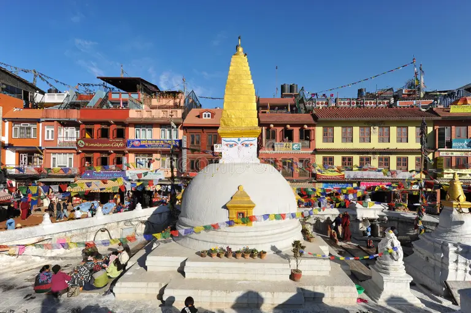

Budhanath shiva Temple

Budhanath shiva Temple
Baidyanath Temple (IAST: Baidyãnath), also known as Baba Baidyanath Dham, is a Hindu temple dedicated to Shiva. It is located in Deoghar, in the Santhal Parganas division of the Indian state of Jharkhand.[1] The temple complex comprises the central shrine of Baba Baidyanath along with 21 additional temples. It is significant to the Hindu sects of Shaivism as this temple is referred to as one of the twelve Jyotirlingas.
Legend
According to the legends, Ravana was performing penance in the Himalayan region to appease Shiva. He offered nine of his heads as an offering to Shiva. As he was to sacrifice his tenth head, Shiva appeared before him and expressed satisfaction with the offering. Then, Shiva asked what boon he desired. Ravana asked to take the "Kamna Linga'' to the island of Lanka and expressed his desire to take Shiva from Kailash to Lanka.
Shiva agreed to Ravana's request but with a condition. He said that if the lingam was placed en route, it would become the permanent abode of the deity and could never be moved.
Celestial gods became worried upon hearing that Shiva had departed from his abode on Mount Kailash. They sought a resolution from Vishnu. Vishnu asked Varuna, the deity associated with water, to enter Ravana's stomach through achamana, a ritual that involves sipping water from the palm of one's hand. As a consequence of performing achaman, Ravana departed for Lanka with the lingam and felt the need to urinate in the vicinity of Deoghar.
The story states that Vishnu took the form of a gwala named Baiju Ahir.[3] While Ravana went to perform Surya Namaskaram, he gave a lingam to this cowherd. Due to the presence of Varun Dev, Ravana took a very long time. Baiju got angry, having to wait for Ravana, for a very long time. He then positioned the lingam on the ground and left the place. Upon returning, Ravana attempted to pick up the lingam, but was unsuccessful in his endeavor.
Ravana became upset after realizing this was the doing of Lord Vishnu and proceeded to press his thumb onto the lingam before departing which partially damaged the Shiv Lingam. The Shiva lingam was then worshipped by Brahma, Vishnu, and other deities and they constructed the Baidyanath Temple. Since then, Mahadev has taken up residence in Deoghar as the embodiment of the Kamna Linga.
The story states that Vishnu took the form of a gwala named Baiju Ahir.[3] While Ravana went to perform Surya Namaskaram, he gave a lingam to this cowherd. Due to the presence of Varun Dev, Ravana took a very long time. Baiju got angry, having to wait for Ravana, for a very long time. He then positioned the lingam on the ground and left the place. Upon returning, Ravana attempted to pick up the lingam, but was unsuccessful in his endeavor. Ravana became upset after realizing this was the doing of Lord Vishnu and proceeded to press his thumb onto the lingam before departing which partially damaged the Shiv Lingam. The Shiva lingam was then worshipped by Brahma, Vishnu, and other deities and they constructed the Baidyanath Temple. Since then, Mahadev has taken up residence in Deoghar as the embodiment of the Kamna Linga.
Jyotirlinga
According to Shiv Mahapuran, once Brahma (the Hindu God of creation) and Vishnu (the Hindu God of preservation) had an argument in terms of supremacy of creation.[5] To test them, Shiva pierced the three worlds as a huge endless pillar of light, the Jyotirlinga. Vishnu and Brahma split their way downwards and upwards respectively to find the end of the light in either direction. Brahma lied that he found out the end, while Vishnu conceded his defeat. Shiva appeared as the second pillar of light and cursed Brahma, that he would have no place in ceremonies while Vishnu would be worshipped until the end of eternity. The jyotirlinga is the supreme partless reality, out of which Shiva partly appears. The jyotirlinga shrines, thus are places where Shiva appeared as a fiery column of light
Originally there were believed to be 64 jyotirlingas while 12 of them are considered to be very auspicious and holy.[5] Each of the twelve jyotirlinga sites takes the name of the presiding deity — each considered a different manifestation of Shiva.[8] At all these sites, the primary image is lingam representing the beginningless and endless Stambha pillar, symbolizing the infinite nature of Shiva.
The twelve jyotirlinga are Somnath at Veraval in Gujarat, Mallikarjuna at Srisailam in Andhra Pradesh, Mahakaleswar at Ujjain in Madhya Pradesh, Omkareshwar in Madhya Pradesh, Kedarnath in Uttarakhand, Bhimashankar in Maharashtra, Viswanath at Varanasi in Uttar Pradesh, Triambakeshwar in Maharashtra, Baidyanath in Jharkhand, Nageshvara at Dwarka in Gujarat, Rameshwar at Rameswaram in Tamil Nadu, and Grishneshwar at Maharashtra.
Description
The Matsya Purana called the place Arogya Baidyanathitee. This whole area of Deoghar was under the rule of the Kings of Gidhaur who were much attached with this temple. Raja Bir Vikram Singh founded this princely state in 1266. In 1757 after the Battle of Plassey the officers of the East India Company paid their attention to this temple.
An English man, Keating was sent to look at the administration of the temple. Mr. Keating, the first English collector of Birbhum, took interest in the administration of the temple. In 1788, under Mr. Keating's order Mr. Hesilrigg, his assistant, who was probably the first English man to visit the holy city, set out to supervise personally the collection of the pilgrim offerings and dues. Later, when Mr. Keating himself visited Babadham, he was convinced and forced to abandon his policy of direct interference. He handed over the full control of the temple to the hands of the high priest.[12][13]
The Havan Kund temple of Baba dham opens only once a year, there is a special tradition associated with the Navratri festival